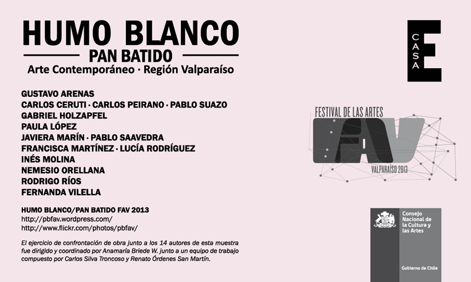
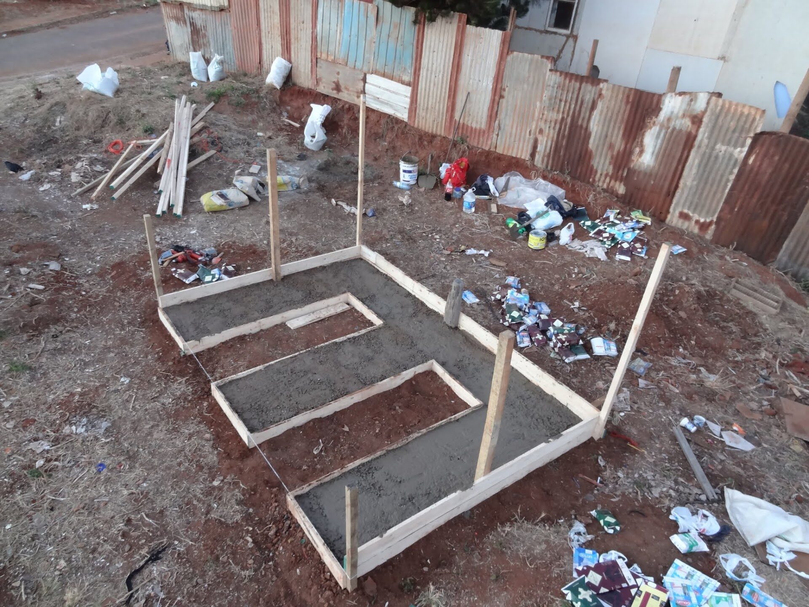
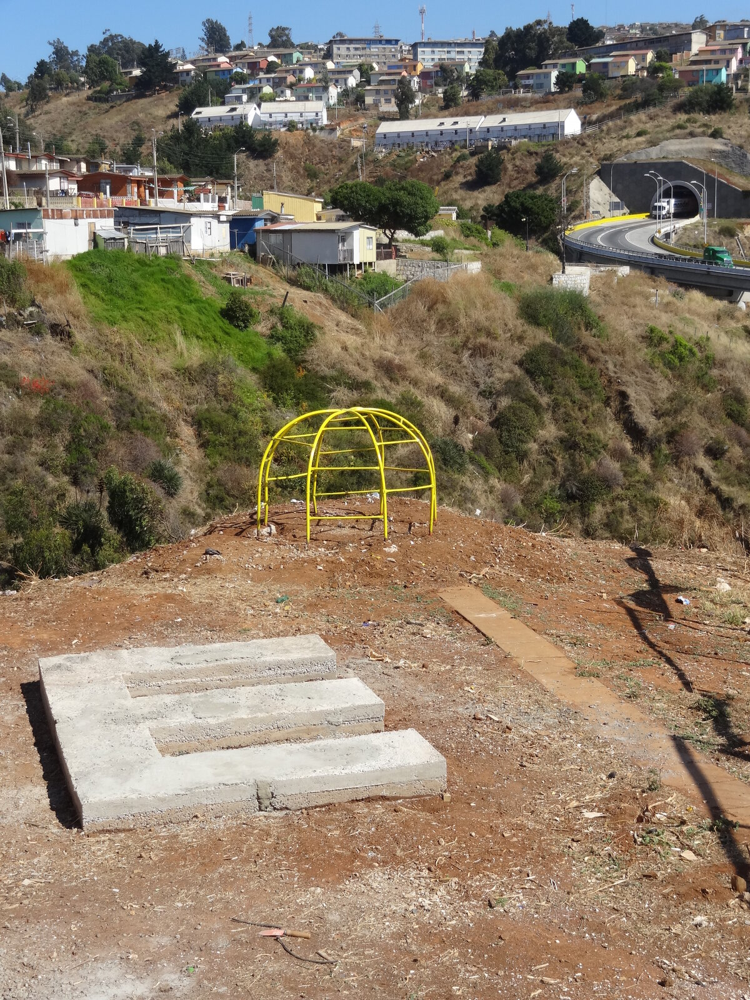
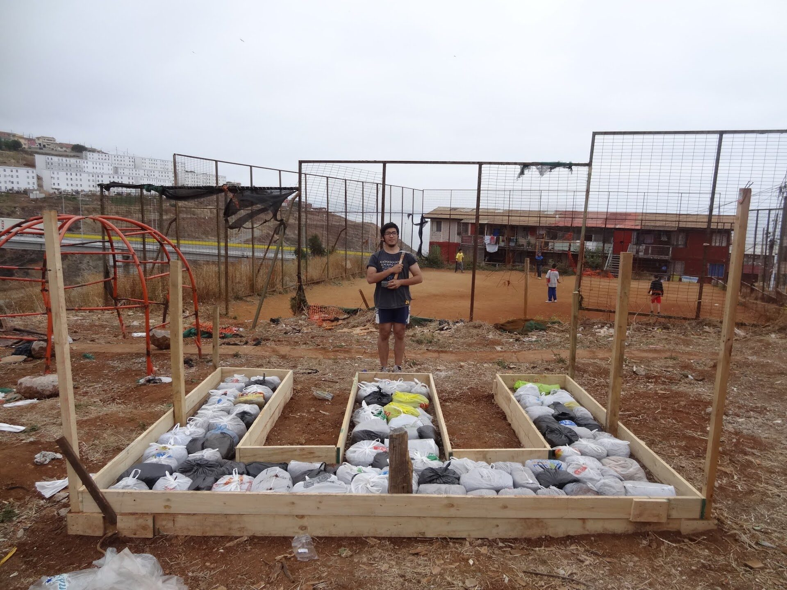
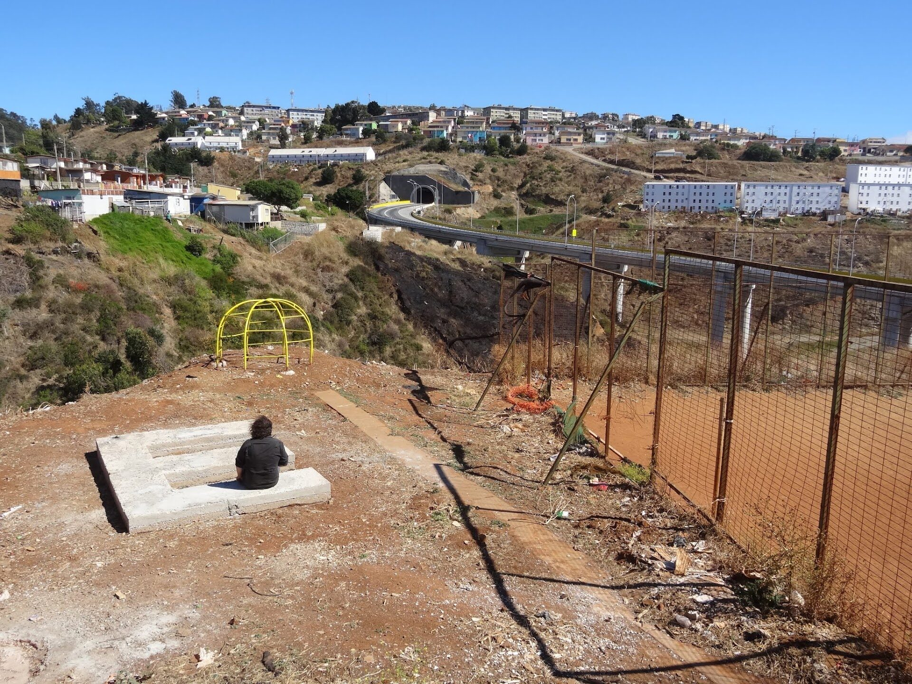
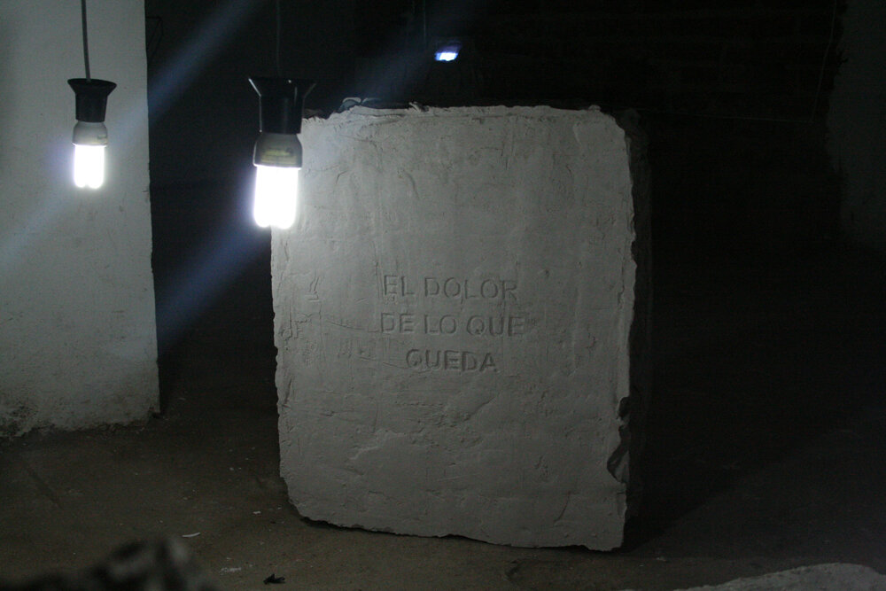
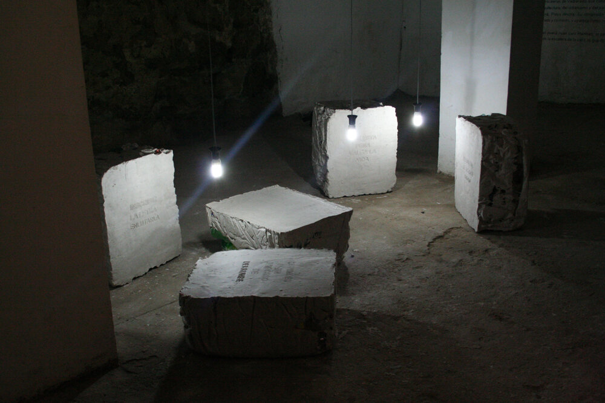
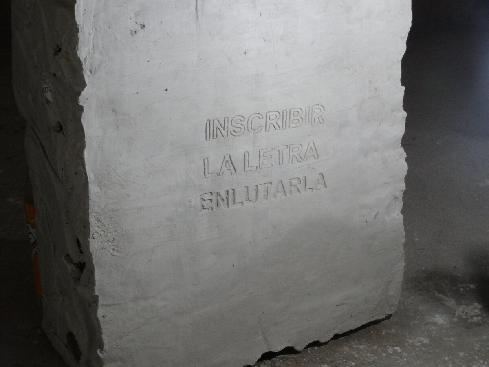
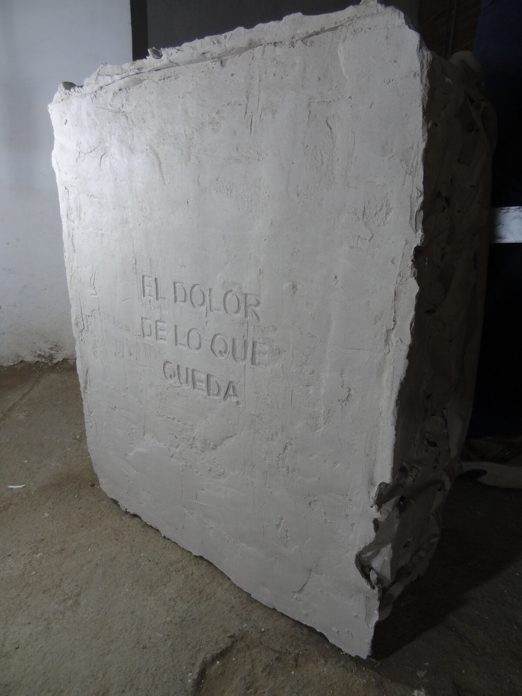
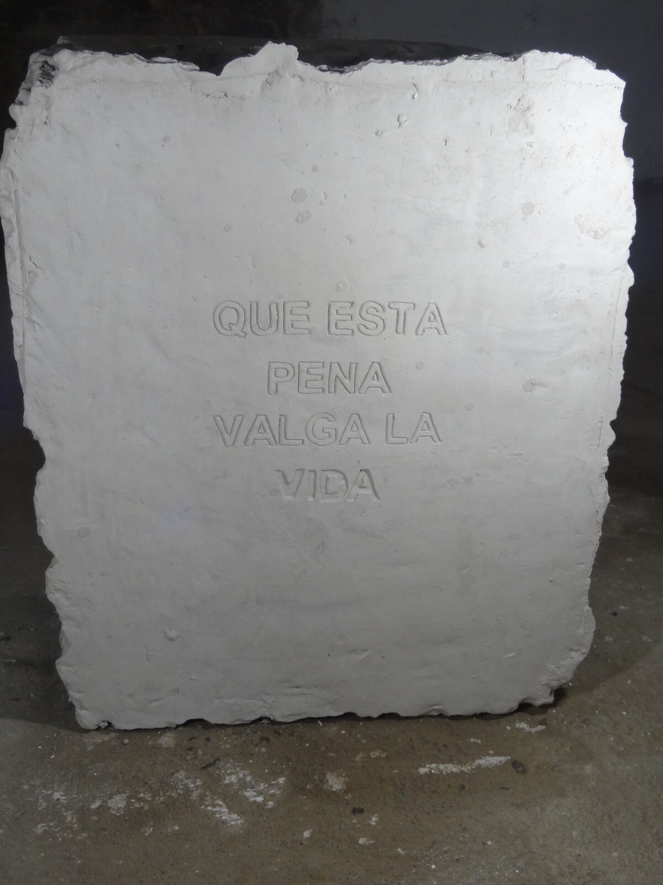

Dossier Nº 008
El Séptimo Peldaño
«Deberíamos aprender a vivir mucho más en las escaleras. Pero ¿cómo?» — Georges Perec

Escaleras que no llevan a ninguna parte
El séptimo peldaño es una obra que se plantea desde el lenguaje, la intervención urbana y la galería de arte, realizada en conjunto con Carlos Peirano y Pablo Suazo. Este proyecto surge desde la observación de las escaleras de Valparaíso que conducen a ninguna parte: la escalera como forma elemental de la arquitectura, del urbanismo y del paisaje porteño.
La letra construida
Se construyó una E en la población Costa Brava, Playa Ancha, de 350 × 240 × 30 centímetros, hecha con material reciclado y cemento. La letra aparece como mobiliario en un patio de juegos devenido basural.
El perro en el séptimo peldaño
En el poema «La desaparición de una familia» de Juan Luis Martínez, el perro guardián del libro, llamado Sogol, desaparece en el séptimo peldaño de la escalera de la casa — lo que da título a esta obra. La sala de galería que la acompaña, con bloques de yeso y una caja de luz, retoma ese gesto de inscripción y desaparición.










33°02′S · 71°39′O